import random
import numpy as np
import matplotlib.pyplot as plt
import matplotlib.image as mpimg
import tensorflow as tfPartie 3 Dataset FMINISTs
1 Introduction
2 Import les modules et le dataset
import os
TRAIN_DIR = 'photos/horse-or-human'
print(f"\nSubdirectories within '{TRAIN_DIR}' dir: {os.listdir(TRAIN_DIR)}")
Subdirectories within 'photos/horse-or-human' dir: ['humans', 'horses']# Répertoire contenant les images d'entraînement des chevaux
train_horse_dir = os.path.join(TRAIN_DIR, 'horses')
# Répertoire contenant les images d'entraînement des humains
train_human_dir = os.path.join(TRAIN_DIR, 'humans')
# Check les filenames
train_horse_names = os.listdir(train_horse_dir)
print(f"5 files in horses subdir: {train_horse_names[:5]}")
train_human_names = os.listdir(train_human_dir)
print(f"5 files in humans subdir:{train_human_names[:5]}")5 files in horses subdir: ['horse43-5.png', 'horse06-5.png', 'horse20-6.png', 'horse04-7.png', 'horse41-7.png']
5 files in humans subdir:['human17-22.png', 'human10-17.png', 'human10-03.png', 'human07-27.png', 'human09-22.png']print(f"total training horse images: {len(os.listdir(train_horse_dir))}")
print(f"total training human images: {len(os.listdir(train_human_dir))}")total training horse images: 500
total training human images: 527# Paramètres pour votre graphique ; affichage des images dans une grille 4x4
nrows = 4
ncols = 4
# Configuration de la figure matplotlib et ajustement de la taille pour la grille 4x4
fig = plt.gcf()
fig.set_size_inches(ncols * 3, nrows * 3)
next_horse_pix = [os.path.join(train_horse_dir, fname)
for fname in random.sample(train_horse_names, k=8)]
next_human_pix = [os.path.join(train_human_dir, fname)
for fname in random.sample(train_human_names, k=8)]
for i, img_path in enumerate(next_horse_pix + next_human_pix):
# Configuration du sous-graphique ; les indices commencent à 1
sp = plt.subplot(nrows, ncols, i + 1)
sp.axis('Off') # Masquer les axes (et les quadrillages)
img = mpimg.imread(img_path)
plt.imshow(img)
plt.show()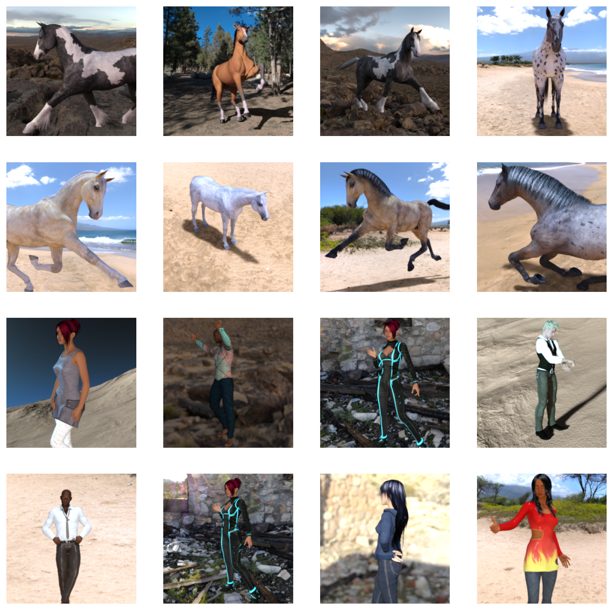
3 Modele
model = tf.keras.models.Sequential([
# Note the input shape is the desired size of the image 300x300 with 3 bytes color
# This is the first convolution
tf.keras.Input(shape=(300, 300, 3)),
tf.keras.layers.Conv2D(16, (3,3), activation='relu'),
tf.keras.layers.MaxPooling2D(2, 2),
# The second convolution
tf.keras.layers.Conv2D(32, (3,3), activation='relu'),
tf.keras.layers.MaxPooling2D(2,2),
# The third convolution
tf.keras.layers.Conv2D(64, (3,3), activation='relu'),
tf.keras.layers.MaxPooling2D(2,2),
# The fourth convolution
tf.keras.layers.Conv2D(64, (3,3), activation='relu'),
tf.keras.layers.MaxPooling2D(2,2),
# The fifth convolution
tf.keras.layers.Conv2D(64, (3,3), activation='relu'),
tf.keras.layers.MaxPooling2D(2,2),
# Flatten the results to feed into a DNN
tf.keras.layers.Flatten(),
# 512 neuron hidden layer
tf.keras.layers.Dense(512, activation='relu'),
# Only 1 output neuron. It will contain a value from 0 to 1 where 0 is for 'horses' and 1 for 'humans'
tf.keras.layers.Dense(1, activation='sigmoid')
])model.summary()Model: "sequential"
┏━━━━━━━━━━━━━━━━━━━━━━━━━━━━━━━━━┳━━━━━━━━━━━━━━━━━━━━━━━━┳━━━━━━━━━━━━━━━┓ ┃ Layer (type) ┃ Output Shape ┃ Param # ┃ ┡━━━━━━━━━━━━━━━━━━━━━━━━━━━━━━━━━╇━━━━━━━━━━━━━━━━━━━━━━━━╇━━━━━━━━━━━━━━━┩ │ conv2d (Conv2D) │ (None, 298, 298, 16) │ 448 │ ├─────────────────────────────────┼────────────────────────┼───────────────┤ │ max_pooling2d (MaxPooling2D) │ (None, 149, 149, 16) │ 0 │ ├─────────────────────────────────┼────────────────────────┼───────────────┤ │ conv2d_1 (Conv2D) │ (None, 147, 147, 32) │ 4,640 │ ├─────────────────────────────────┼────────────────────────┼───────────────┤ │ max_pooling2d_1 (MaxPooling2D) │ (None, 73, 73, 32) │ 0 │ ├─────────────────────────────────┼────────────────────────┼───────────────┤ │ conv2d_2 (Conv2D) │ (None, 71, 71, 64) │ 18,496 │ ├─────────────────────────────────┼────────────────────────┼───────────────┤ │ max_pooling2d_2 (MaxPooling2D) │ (None, 35, 35, 64) │ 0 │ ├─────────────────────────────────┼────────────────────────┼───────────────┤ │ conv2d_3 (Conv2D) │ (None, 33, 33, 64) │ 36,928 │ ├─────────────────────────────────┼────────────────────────┼───────────────┤ │ max_pooling2d_3 (MaxPooling2D) │ (None, 16, 16, 64) │ 0 │ ├─────────────────────────────────┼────────────────────────┼───────────────┤ │ conv2d_4 (Conv2D) │ (None, 14, 14, 64) │ 36,928 │ ├─────────────────────────────────┼────────────────────────┼───────────────┤ │ max_pooling2d_4 (MaxPooling2D) │ (None, 7, 7, 64) │ 0 │ ├─────────────────────────────────┼────────────────────────┼───────────────┤ │ flatten (Flatten) │ (None, 3136) │ 0 │ ├─────────────────────────────────┼────────────────────────┼───────────────┤ │ dense (Dense) │ (None, 512) │ 1,606,144 │ ├─────────────────────────────────┼────────────────────────┼───────────────┤ │ dense_1 (Dense) │ (None, 1) │ 513 │ └─────────────────────────────────┴────────────────────────┴───────────────┘
Total params: 1,704,097 (6.50 MB)
Trainable params: 1,704,097 (6.50 MB)
Non-trainable params: 0 (0.00 B)
model.compile(loss='binary_crossentropy',
optimizer=tf.keras.optimizers.RMSprop(learning_rate=0.001),
metrics=['accuracy'])Contrairement à Fashion MNIST, nos images sont des fichiers .jpg répartis dans des dossiers, pas des tableaux de nombres. La fonction image_dataset_from_directory s’occupe automatiquement de :
- Lire toutes les images des deux sous-dossiers (
horses/,humans/) - Attribuer les labels selon le dossier — 0 pour
horses/, 1 pourhumans/ - Redimensionner toutes les images en
(300, 300) - Regrouper les images en batches de 32, pour un entraînement plus rapide
À propos de label_mode='binary' : comme il n’y a que 2 classes, ce paramètre indique que le label doit être un simple 0 ou 1, ce qui correspond à la couche de sortie Dense(1, activation='sigmoid') définie dans le modèle.
# Instantiate the dataset
train_dataset = tf.keras.utils.image_dataset_from_directory(
TRAIN_DIR,
image_size=(300, 300),
batch_size=32,
label_mode='binary'
)
# Check the type
dataset_type = type(train_dataset)
print(f'train_dataset inherits from tf.data.Dataset: {issubclass(dataset_type, tf.data.Dataset)}')Found 1027 files belonging to 2 classes.
train_dataset inherits from tf.data.Dataset: True# Get one batch from the dataset
sample_batch = list(train_dataset.take(1))[0]
# Check that the output is a pair
print(f'sample batch data type: {type(sample_batch)}')
print(f'number of elements: {len(sample_batch)}')
# Extract image and label
image_batch = sample_batch[0]
label_batch = sample_batch[1]
# Check the shapes
print(f'image batch shape: {image_batch.shape}')
print(f'label batch shape: {label_batch.shape}')sample batch data type: <class 'tuple'>
number of elements: 2
image batch shape: (32, 300, 300, 3)
label batch shape: (32, 1)3.1 Normalisation
print(image_batch[0].numpy())[[[167. 212. 255.]
[167. 212. 255.]
[167. 211. 255.]
...
[174. 216. 255.]
[174. 216. 255.]
[173. 216. 255.]]
[[168. 212. 255.]
[168. 212. 255.]
[168. 211. 255.]
...
[177. 217. 255.]
[176. 217. 255.]
[175. 217. 255.]]
[[168. 212. 255.]
[168. 212. 255.]
[167. 212. 255.]
...
[185. 222. 255.]
[181. 219. 255.]
[181. 219. 255.]]
...
[[233. 202. 174.]
[227. 195. 168.]
[222. 190. 165.]
...
[225. 196. 172.]
[226. 197. 171.]
[227. 196. 170.]]
[[230. 198. 170.]
[230. 197. 170.]
[226. 194. 168.]
...
[217. 188. 163.]
[218. 189. 165.]
[221. 190. 164.]]
[[227. 196. 171.]
[229. 200. 173.]
[225. 195. 167.]
...
[214. 185. 159.]
[213. 185. 161.]
[214. 185. 160.]]]# Check the range of values
print(f'max value: {np.max(image_batch[0].numpy())}')
print(f'min value: {np.min(image_batch[0].numpy())}')max value: 255.0
min value: 4.0rescale_layer = tf.keras.layers.Rescaling(scale=1./255)image_scaled = rescale_layer(image_batch[0]).numpy()
print(image_scaled)[[[0.654902 0.8313726 1. ]
[0.654902 0.8313726 1. ]
[0.654902 0.82745105 1. ]
...
[0.68235296 0.8470589 1. ]
[0.68235296 0.8470589 1. ]
[0.6784314 0.8470589 1. ]]
[[0.65882355 0.8313726 1. ]
[0.65882355 0.8313726 1. ]
[0.65882355 0.82745105 1. ]
...
[0.69411767 0.85098046 1. ]
[0.6901961 0.85098046 1. ]
[0.6862745 0.85098046 1. ]]
[[0.65882355 0.8313726 1. ]
[0.65882355 0.8313726 1. ]
[0.654902 0.8313726 1. ]
...
[0.7254902 0.8705883 1. ]
[0.70980394 0.8588236 1. ]
[0.70980394 0.8588236 1. ]]
...
[[0.91372555 0.79215693 0.68235296]
[0.89019614 0.76470596 0.65882355]
[0.8705883 0.74509805 0.64705884]
...
[0.882353 0.7686275 0.6745098 ]
[0.8862746 0.7725491 0.67058825]
[0.89019614 0.7686275 0.6666667 ]]
[[0.90196085 0.77647066 0.6666667 ]
[0.90196085 0.7725491 0.6666667 ]
[0.8862746 0.7607844 0.65882355]
...
[0.85098046 0.7372549 0.6392157 ]
[0.854902 0.7411765 0.64705884]
[0.86666673 0.74509805 0.6431373 ]]
[[0.89019614 0.7686275 0.67058825]
[0.8980393 0.7843138 0.6784314 ]
[0.882353 0.76470596 0.654902 ]
...
[0.83921576 0.7254902 0.62352943]
[0.8352942 0.7254902 0.6313726 ]
[0.83921576 0.7254902 0.627451 ]]]print(f'max value: {np.max(image_scaled)}')
print(f'min value: {np.min(image_scaled)}')max value: 1.0
min value: 0.01568627543747425# Rescale the image using a lambda function
train_dataset_scaled = train_dataset.map(lambda image, label: (rescale_layer(image), label))
# # Same result as above but without using a lambda function
# # define a function to rescale the image
# def rescale_image(image, label):
# return rescale_layer(image), label
# dataset_scaled = dataset.map(rescale_image)# Get one batch of data
sample_batch = list(train_dataset_scaled.take(1))[0]
# Get the image
image_scaled = sample_batch[0][1].numpy()
# Check the range of values for this image
print(f'max value: {np.max(image_scaled)}')
print(f'min value: {np.min(image_scaled)}')max value: 1.0
min value: 0.043137256056070333.2 Optimise Data Pipeline
SHUFFLE_BUFFER_SIZE = 1000
PREFETCH_BUFFER_SIZE = tf.data.AUTOTUNE
train_dataset_final = (train_dataset_scaled
.cache()
.shuffle(SHUFFLE_BUFFER_SIZE)
.prefetch(PREFETCH_BUFFER_SIZE)
)history = model.fit(train_dataset_final,epochs=15,verbose=2)
# Sauvegarder le modèle entraîné pour le Demo Interactive
model.save('horse_human_model.h5')Epoch 1/1533/33 - 32s - 981ms/step - accuracy: 0.6310 - loss: 0.6314
Epoch 2/15
33/33 - 31s - 926ms/step - accuracy: 0.8676 - loss: 0.4513
Epoch 3/15
33/33 - 37s - 1s/step - accuracy: 0.9133 - loss: 0.3250
Epoch 4/15
33/33 - 34s - 1s/step - accuracy: 0.9513 - loss: 0.1376
Epoch 5/15
33/33 - 32s - 966ms/step - accuracy: 0.9455 - loss: 0.2220
Epoch 6/15
33/33 - 32s - 968ms/step - accuracy: 0.9796 - loss: 0.0654
Epoch 7/15
33/33 - 32s - 974ms/step - accuracy: 0.9669 - loss: 0.1176
Epoch 8/15
33/33 - 32s - 961ms/step - accuracy: 0.9854 - loss: 0.0405
Epoch 9/15
33/33 - 32s - 957ms/step - accuracy: 0.9747 - loss: 0.8400
Epoch 10/15
33/33 - 32s - 985ms/step - accuracy: 1.0000 - loss: 0.0016
Epoch 11/15
33/33 - 31s - 954ms/step - accuracy: 0.9912 - loss: 0.1013
Epoch 12/15
33/33 - 32s - 955ms/step - accuracy: 0.9893 - loss: 0.0352
Epoch 13/15
33/33 - 32s - 963ms/step - accuracy: 1.0000 - loss: 6.6948e-04
Epoch 14/15
33/33 - 33s - 988ms/step - accuracy: 0.9698 - loss: 0.2692
Epoch 15/15
33/33 - 32s - 971ms/step - accuracy: 0.9990 - loss: 0.00543.3 Évolution de l’accuracy pendant l’entraînement
# Plot the training accuracy for each epoch
acc = history.history['accuracy']
epochs = range(len(acc))
plt.plot(epochs, acc, 'r', label='Training accuracy')
plt.title('Training accuracy')
plt.legend(loc=0)
plt.show()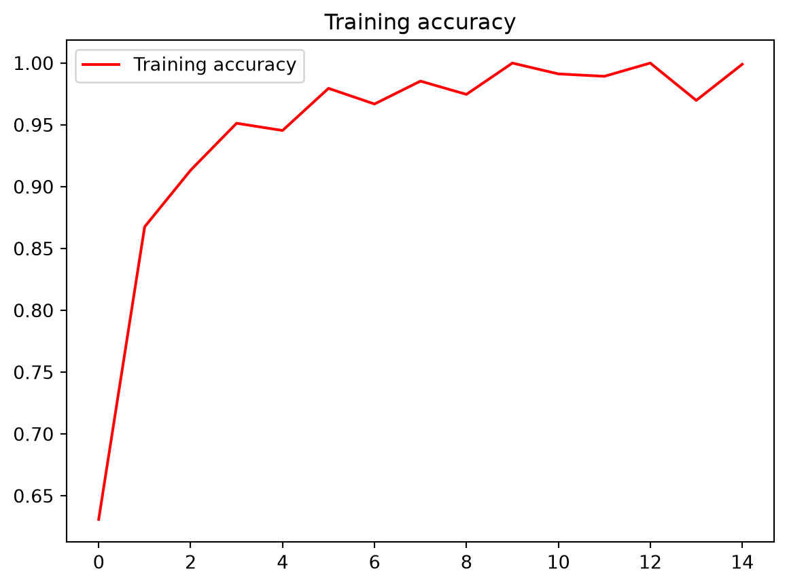
3.4 Fonctionnement du modèle
# Define a new Model that will take an image as input, and will output
# intermediate representations for all layers in the previous model after
# the first.
successive_outputs = [layer.output for layer in model.layers[1:]]
visualization_model = tf.keras.models.Model(inputs = model.inputs, outputs = successive_outputs)
# Prepare a random input image from the training set.
horse_img_files = [os.path.join(train_horse_dir, f) for f in train_horse_names]
human_img_files = [os.path.join(train_human_dir, f) for f in train_human_names]
img_path = random.choice(horse_img_files + human_img_files)
img = tf.keras.utils.load_img(img_path, target_size=(300, 300)) # this is a PIL image
x = tf.keras.utils.img_to_array(img) # Numpy array with shape (300, 300, 3)
x = x.reshape((1,) + x.shape) # Numpy array with shape (1, 300, 300, 3)
# Scale by 1/255
x = rescale_layer(x)
# Run the image through the network, thus obtaining all
# intermediate representations for this image.
successive_feature_maps = visualization_model.predict(x, verbose=False)
# These are the names of the layers, so you can have them as part of the plot
layer_names = [layer.name for layer in model.layers[1:]]
# Display the representations
for layer_name, feature_map in zip(layer_names, successive_feature_maps):
if len(feature_map.shape) == 4:
# Just do this for the conv / maxpool layers, not the fully-connected layers
n_features = feature_map.shape[-1] # number of features in feature map
# The feature map has shape (1, size, size, n_features)
size = feature_map.shape[1]
# Tile the images in this matrix
display_grid = np.zeros((size, size * n_features))
for i in range(n_features):
x = feature_map[0, :, :, i]
x -= x.mean()
x /= x.std()
x *= 64
x += 128
x = np.clip(x, 0, 255).astype('uint8')
# Tile each filter into this big horizontal grid
display_grid[:, i * size : (i + 1) * size] = x
# Display the grid
scale = 20. / n_features
plt.figure(figsize=(scale * n_features, scale))
plt.title(layer_name)
plt.grid(False)
plt.imshow(display_grid, aspect='auto', cmap='viridis')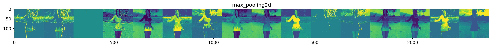
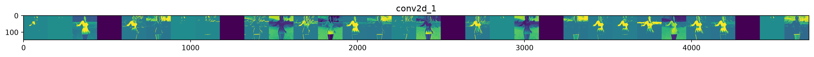
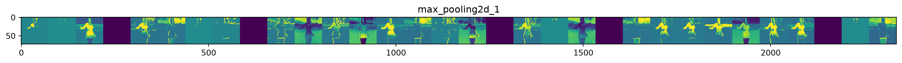
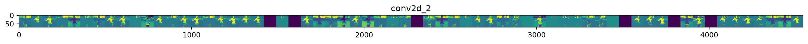
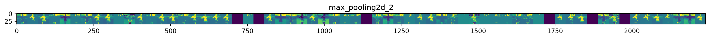
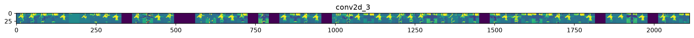
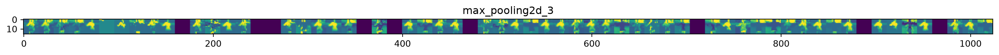
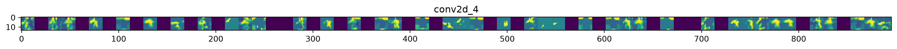
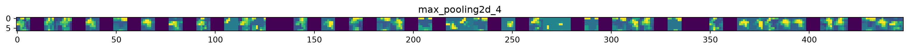